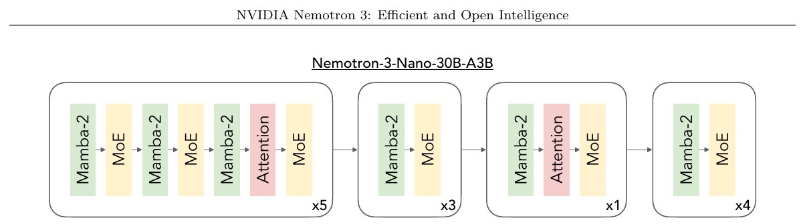
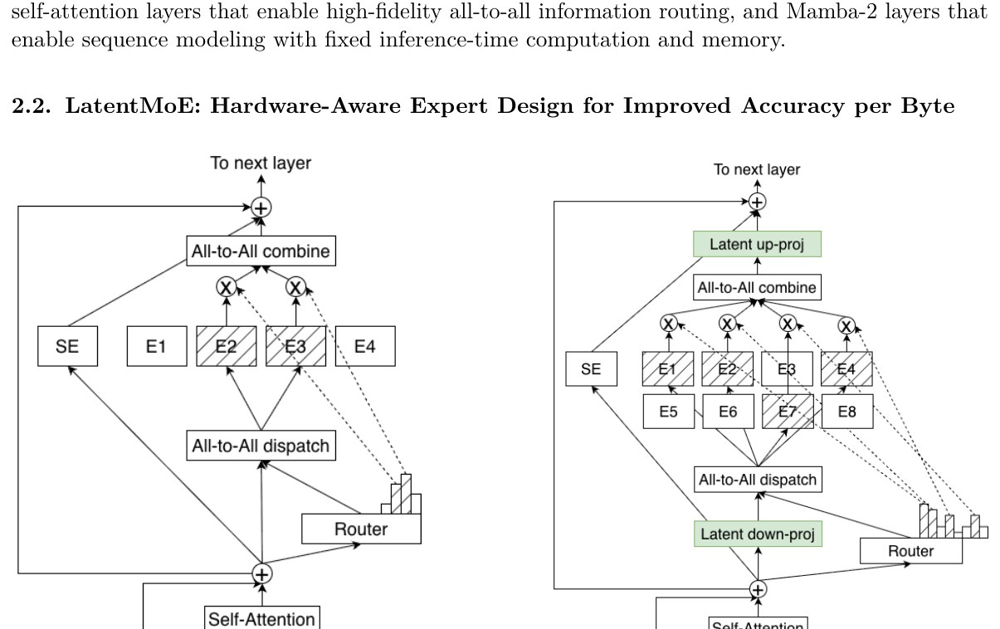
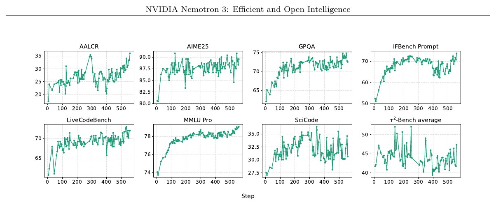
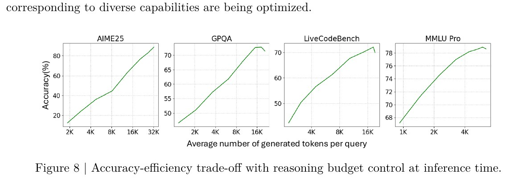
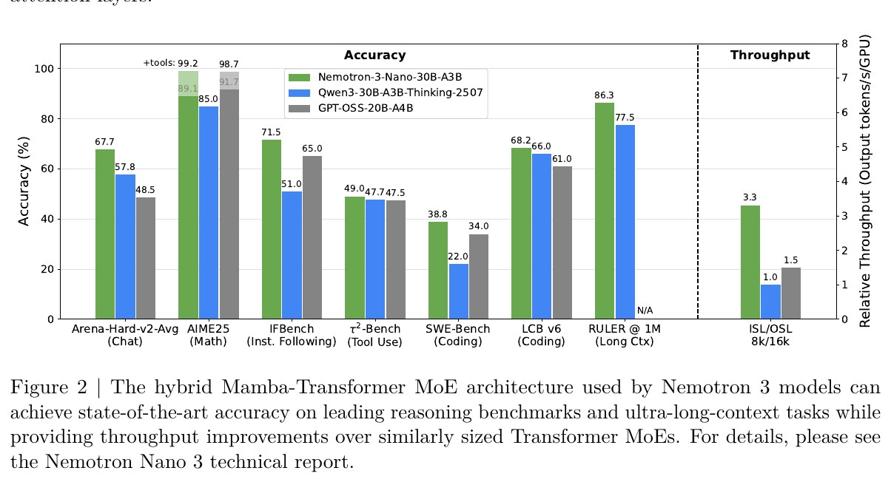

速览
要点五条
混合架构换吞吐
Nano 52 层里只有 6 层注意力推算 · 图 1，其余是 Mamba-2 与 MoE 交替。8k/16k 负载下吞吐是 Qwen3-30B-A3B 的 3.3×图 2，RULER@1M 86.3 vs 77.5图 2。
LatentMoE：省带宽，换专家数
专家放到 ℓ 维潜空间，权重读取与 all-to-all 都缩小 d/ℓ（通常约 4×）图 3。同为约 8B 激活 / 73B 总参、1T token 下，5 项聚合指标全部更好，MMLU-Pro 48.30→52.87表 1。
NVFP4 真 GEMM 预训练
权重 / 激活 / 梯度都量化到 NVFP4，fprop、dgrad、wgrad 都走原生 FP4 GEMM§2.4。Nano 上相对 BF16 loss 差 <1%，8B 激活模型上 <0.6%§2.4 · 图 4。
多环境同时 RL
数学、竞赛代码、指令遵循、SWE、搜索、对话、工具调用、长上下文等环境一次 RL 同时训，作者称比分阶段更稳、更少 reward hacking§2.6；GRPO + masked importance sampling，异步 RL + MTP 加速 rollout。
这是白皮书，不是完整报告
没有数据配比、来源、超参；Super / Ultra 没有任何评测数字。图 2 的细节作者让读者去看 Nano 技术报告图 2 题注。
架构：少注意力的混合 MoE + LatentMoE + MTP
三层改动：全家族的混合 Mamba-Transformer MoE；Super/Ultra 独有的 LatentMoE 和 MTP。

按图 1 的分组与重复次数（×5 / ×3 / ×1 / ×4）展开计数，共 52 层推算。原文没有直接写层数；每层的维度、专家数、注意力头数原文也没有给（只说注意力层用 GQA、2 个 KV head§2.4）。
混合 Mamba-Transformer MoE 全家族
- MoE 不与昂贵的自注意力交替，而是主要和 Mamba-2 交替：生成时 Mamba-2 只存常量状态，不用随长度增长的 KV cache§2.1。
- 保留少量注意力层负责「高保真的全对全信息路由」§2.1；每层 GQA、仅 2 个 KV head§2.4。
- 注意力层不用 RoPE，靠 Mamba 提供隐式位置信息，避开扩上下文时 RoPE 越界问题§2.5。
MTP（Multi-Token Prediction）Super / Ultra
- 训练上提供更密的监督：8B 激活 Transformer MoE 基座、1T token 消融，7 项基准平均提升「约 2.4%」§2.3 · 表 2（按相对提升平均可复现 2.4%，绝对值平均 +1.58 分推算）。
- 推理上天然做投机解码草稿：轻量 MTP 模块在前 2 个预测 token 上约 97% 接受率§2.3。
- RL 阶段也用 MTP 加速 rollout 生成§2.6。
LatentMoE：按硬件瓶颈重新分配专家预算
作者的推理分两种场景：低延迟部署一次只处理几十到几百 token，MoE 受显存带宽限制，成本由读取 d×m 的专家权重决定；高吞吐部署一次处理上千 token，瓶颈变成 all-to-all 通信，通信量与 top-K 和 d 成正比、与专家中间维 m 无关；而 FFN 的表达力大致正比于 K×m§2.2。结论是：缩小专家的输入维 d，把省下的预算拿去加专家数 N 和激活数 K。

示意（依据 §2.2 文字与图 3b 重画）：router、共享专家和非专家层留在原维度 d§2.2；专家的具体排布、虚线所示的路由权重作用位置以原图 3 为准。
消融设置 表 1 · §2.2
- 训练量
- 两者均 1T token、相同超参
- Standard MoE
- d = 4096，128 专家，激活 6
- LatentMoE
- ℓ = 1024，512 专家，激活 22
- d/ℓ
- 4推算；专家数 128→512 恰为 ×4
- Code
- HumanEval / HumanEval+ / MBPP / MBPP+ 均值
- Math
- GSM8K CoT / MATH-500 均值
- Commonsense
- RACE / ARC-C / HellaSwag / Winogrande 均值
按公式 K′ = K·d/ℓ 应为 24，实际用 22推算，原文没有解释。
数据：白皮书几乎只给了「承诺」和长上下文合成方向
本节对照全文逐条列出原文披露的数据信息。来源、配比、清洗、去重、标注方式均原文未披露，因此不画任何占比条形图。
| 项目 | 原文写法 | 规模 / 数字 | 来源 |
|---|---|---|---|
| 开放与总量 | |||
| 开放数据集 | 将开放「持有再分发权的全部数据」；结论处写作「大部分训练数据」 | 10T+ token | 摘要 · §1 · §3 |
| NVFP4 预训练 | 在混合 Mamba-MoE 上稳定训练到该量级（未说明是哪个型号） | ≤25T token | §2.4 |
| 预训练语料来源 / 配比 | — | 原文未披露 | — |
| 清洗 / 去重 / 质量过滤 | — | 原文未披露 | — |
| 长上下文（以 Nano 为例） | |||
| CPT 序列长度 | 单独的 continued pre-training 阶段；无需从 8k 逐级加到 512k | 512k | §2.5 |
| SFT 序列长度 | — | 256k | §2.5 |
| RL 长上下文环境 | 输入长度上限 | 32k | §2.5 |
| 长上下文合成数据 | 三个阶段都加入：长程检索、多跳推理、多文档信息聚合等 | 量未披露 | §2.5 |
| 后训练 | |||
| RL 环境 | 数学与科学推理、竞赛代码、指令遵循、软件工程、搜索、对话、通用 Agent 工具调用、长上下文「等」 | 环境数 / 样本量未披露 | §2.6 |
| SFT 数据 | 仅提到 256k 长度 | 原文未披露 | §2.5 |
| 消融与评估用数据 | |||
| 架构消融训练量 | LatentMoE、MTP、NVFP4 下游对比 | 1T token | 表 1 · 表 2 · 图 5 |
| NVFP4 敏感层消融 | 从 Nano NVFP4 checkpoint 起继续 | 500B token 处起 | 图 4 题注 |
| 长程 NLL 评估 | 仓库级代码序列 | >1M token / 条 | §2.5 · 图 6 |
作者名单里有单独的「Pretraining Data」组，但正文没有写数据工程细节；Nano 的数据细节需看其独立技术报告（本页不引用该报告的数字）。
原文给了什么 可核对
- 长上下文能力靠专门设计的合成数据，按能力类型（检索 / 多跳 / 多文档聚合）组织，并且在 CPT、SFT、RL 三个阶段都放§2.5。
- 长上下文 CPT 直接用 512k，不做 8k→512k 的逐级加长§2.5。
- 开放边界写清：只开放有再分发权的数据摘要。
原文没给什么 未披露
- 预训练总 token 数（Nano / Super / Ultra 各自）、语种与领域配比。
- 任何过滤器、去重阈值、质量打分模型、合成数据占比。
- SFT / RL 的数据规模、环境数量、奖励设计。
训练配方：NVFP4 预训练 → 长上下文 CPT → SFT → 多环境 RL
阶段顺序和长度来自 §2.5（以 Nano 为例）；学习率、batch、步数等超参原文均未给。
预训练
- 精度
- NVFP4（Super/Ultra）
- 规模
- ≤25T token
部分敏感层保留高精度，见下§2.4
长上下文 CPT
- 序列
- 512k
- 数据
- 含长程合成数据
不需要分级加长§2.5
SFT
- 序列
- 256k
- 数据
- 含长程合成数据
规模未披露§2.5
多环境 RL
- 算法
- GRPO + masked IS
- 长上下文
- 输入 ≤32k
所有环境同时训；异步 RL§2.5–2.6
NVFP4 配方：哪些层不进 FP4
| 组件 | 精度 | 原因（原文） | 来源 |
|---|---|---|---|
| 多数 GEMM（权重 / 激活 / 梯度） | NVFP4 | fprop / dgrad / wgrad 全用原生 NVFP4 GEMM（cuBLAS 后端 + Transformer Engine）；此前工作只是用 quantize-dequantize 在 BF16 GEMM 上模拟 | §2.4 |
| 网络最后 15% | 高精度 | 维持稳定 | §2.4 |
| QKV 与注意力投影 | BF16 | 注意力层少且每层仅 2 个 KV head，要保住保真度 | §2.4 |
| Mamba 输出投影 | MXFP8 | 量化到 NVFP4 时 flush-to-zero 高达 40%（Nano） | §2.4 |
| LatentMoE 的潜空间投影 | BF16 | 对 step time 影响很小 | §2.4 |
| MTP 层 | BF16 | 位于网络末端，且要保住 MTP 能力 | §2.4 |
NVFP4 格式与数值技巧§2.4
- 格式：16 元素 micro-block 缩放；block 缩放因子用 E4M3；再加一级 FP32 全局缩放；元素为 E2M1。
- 权重量化用 2D block scaling；wgrad 的输入做 Random Hadamard Transform；梯度用随机舍入。
- 硬件动机：GB300 上 FP4 峰值吞吐是 FP8 的 3ק2.4。
- 效果：Nano 相对 BF16 loss 差 <1%，8B 激活 MoE 上 <0.6%，规模越大差距越小；8B 激活模型 1T token 内 8 项下游指标的 NVFP4 曲线与 BF16 接近（评测在 BF16 下做）图 4 · 图 5。把 Mamba 输出投影和 QKV/注意力投影也量化成 NVFP4 的消融，train / val loss 都更差图 4。
后训练：一个 RL run 里同时优化所有能力
做法
- 不再像前代那样按任务分阶段 RL，而是所有环境同时训；作者称更稳、更不容易 reward hacking，且避免分阶段导致的部分能力退化§2.6。
- 异步 RL：训练与推理解耦；用 MTP 加速 rollout§2.6。
- GRPO + masked importance sampling，修正训练策略与 rollout 策略的差异§2.6。
- 软件栈 Apache 2.0 开源：NeMo-RL（训练）+ NeMo-Gym（环境集合）§2.6。
推理预算控制 §2.7
用户指定思考 token 上限；到达上限时在序列后追加 </think>，模型基于不完整的思考继续生成回答。图 8 给出 Nano 在 AIME25、GPQA、LiveCodeBench、MMLU Pro 上「平均生成 token 数—准确率」曲线；GPQA、LiveCodeBench 和 MMLU Pro 的曲线在最大预算处略有回落图 8。


评测：全部数字只关于 Nano 和消融模型
白皮书只给出 Nano 的对比（图 2）、长上下文（表 3 / 图 6）和三组消融。Super / Ultra 没有任何分数。

| 基准（能力） | Nemotron-3-Nano-30B-A3B | Qwen3-30B-A3B-Thinking-2507 | GPT-OSS-20B-A4B |
|---|---|---|---|
| Arena-Hard-v2-Avg（对话） | 67.7 | 57.8 | 48.5 |
| AIME25（数学） | 89.1 +tools 99.2 | 85.0 | 91.7 +tools 98.7 |
| IFBench（指令遵循） | 71.5 | 51.0 | 65.0 |
| τ²-Bench（工具调用） | 49.0 | 47.7 | 47.5 |
| SWE-Bench（代码） | 38.8 | 22.0 | 34.0 |
| LCB v6（代码） | 68.2 | 66.0 | 61.0 |
| RULER @ 1M（长上下文） | 86.3 | 77.5 | N/A |
| 相对吞吐 ISL/OSL 8k/16k | 3.3 | 1.0 | 1.5 |
记号：+tools = 图 2 中 AIME25 柱顶浅色部分，表示允许工具时的分数，Qwen3 没有该项；最高值按无工具分数比较。N/A = 图中 GPT-OSS 没有 RULER@1M 数据。吞吐以 Qwen3-30B-A3B 为 1.0 归一；正文写作「比 Qwen3-30B-A3B 高 3.3×，序列更长时更快」§2.1。硬件、推理框架、采样设置原文未给。
长上下文：Nano Base vs Nemotron 2 Nano Base
怎么读表 3
- 两者都训练到 512k 序列长度表 3 题注。
- 1M 处：54.19 vs 23.43，前代在 512k→1M 断崖下跌，Nemotron 3 是平缓下降表 3。
- 但 128k–512k 三档，Nemotron 3 Nano Base 都低于前代（如 128k 74.48 vs 85.13，差 10.65 分推算）。原文的说法是「对长度外推更鲁棒」，不是「全面更好」。
- 图 6：在 >1M token 的仓库级代码上，累计平均 NLL 随位置持续下降，幂律拟合 R² = 0.883图 6。
表 2 · MTP 消融全表（8B 激活 Transformer MoE 基座，1T token）§2.3
| 任务 | Baseline | + MTP | Δ推算 |
|---|---|---|---|
| MMLU（5-shot, acc） | 70.06 | 71.26 | +1.20 |
| MMLU-Pro（5-shot, CoT EM） | 45.05 | 47.84 | +2.79 |
| MBPP-Sanitized（3-shot） | 65.58 | 66.89 | +1.31 |
| ARC-Challenge（25-shot, acc_norm） | 86.43 | 88.05 | +1.62 |
| WinoGrande（0-shot, acc） | 74.59 | 75.45 | +0.86 |
| RACE（0-shot, acc） | 84.02 | 85.36 | +1.34 |
| GSM8K（8-shot, acc） | 82.49 | 84.46 | +1.97 |
绝对提升均值 +1.58 分；相对提升均值约 2.4%，与正文「roughly 2.4% on average」一致推算。
新在哪
LatentMoE：按「每字节精度」而不是每 FLOP 设计专家
把低延迟（带宽受限）和高吞吐（all-to-all 受限）两种瓶颈拆开分析，得出「缩 d、放大 N 和 K」的设计；router 与共享专家留在原维度。同参数量消融 5 项全胜§2.2 · 表 1。
可核对：表 1 给了两种配置的完整维度与专家数。
原生 NVFP4 GEMM 训到 25T token 级别
从前作的 quantize-dequantize 模拟升级为真 FP4 GEMM，并给出具体的「哪些层不量化」清单与证据（Mamba 输出投影 40% flush-to-zero）§2.4。
可核对：图 4 的敏感层消融。
MoE 混合架构的长度外推更平缓
不用 RoPE、512k CPT 不分级加长，1M 处 RULER 54.19 vs 前代 dense hybrid 23.43§2.5 · 表 3。
注意：短于 1M 时反而低于前代。
多环境同时 RL 取代分阶段 RL
NVIDIA 自家前代用分阶段 RL；这次所有环境一起训，并把环境集合 NeMo-Gym 开源§2.6。
「更稳、更少 reward hacking」只有定性描述，没有对比数字。
不算新：MTP（作者明确引用 DeepSeek-V3 与 Gloeckle et al.）、推理预算控制（沿用 Nemotron 2 Nano 的做法）§2.3 · §2.7。
对图像编辑数据、评测与 caption 的启示
这篇是纯语言模型，没有图像数据。下面每条先写论文怎么做，再写一条可迁移的做法；绿色框里的做法都是迁移建议，不是论文内容。
D1按能力类型设计合成数据，并贯穿所有阶段
论文：长上下文合成数据按「长程检索 / 多跳推理 / 多文档聚合」组织，CPT、SFT、RL 三阶段都放§2.5。
迁移建议：编辑合成数据按能力维度建桶（局部替换、属性修改、多对象关系、多轮累积编辑等），每个桶在预训练、SFT、RL 奖励里都有对应样本，避免某个能力只在一个阶段出现、到下一阶段被冲掉。
D2先写清楚数据的授权边界
论文：只开放「持有再分发权」的数据，规模 10T+ token摘要 · §1。
迁移建议：编辑数据集在入库时就给每条 source / target 打授权字段（可训练 / 可再分发 / 仅内部评测），以后要开源子集或对外交付时能直接按字段切，而不是事后追溯。
D3不必逐级加长，直接上目标长度
论文：512k CPT 没有观察到需要 8k→512k 分级加长§2.5。
迁移建议：caption 从短到长（短指令 → 稠密描述 → 多轮编辑历史）的课程式训练值得做一次「直接混合目标长度」的对照，别默认课程一定有收益。
E1按长度分桶报分，看是平缓下降还是断崖
论文：RULER 分 128k / 256k / 512k / 1M 四档报，能看出前代在 1M 处断崖（23.43），Nemotron 3 平缓（54.19）表 3。
迁移建议：多轮编辑评测按轮数分桶（1 / 3 / 5 / 10 轮），指令遵循按指令长度、操作数分桶；只报一个均值会掩盖「短任务退步、长任务进步」这种表 3 式的交叉。
E2报一条预算曲线，而不是一个点
论文：图 8 给出不同思考预算下的准确率曲线，且部分基准在最大预算处回落图 8 · §2.7。
迁移建议：编辑模型按采样步数 / CFG / 推理时长画「质量—成本」曲线；caption 模型按输出长度上限画「信息覆盖率—幻觉率」曲线，找拐点再定线上配置。
E3带工具的分数单独标记
论文：AIME25 的「+tools」分数用浅色柱单独标出（Nano 99.2 / GPT-OSS 98.7），与无工具分数分开图 2。
迁移建议：编辑评测里，借助外部分割、检测或 Agent 流程得到的结果单列一栏，不和纯模型端到端分数混排比较。
E4多能力同时训练时用面板盯每条曲线
论文：多环境 RL 期间用 8 个基准的随 step 曲线证明各能力同时上升图 7 · §2.6。
迁移建议：编辑 RL / 偏好优化同时上多个 reward（指令遵循、保真、美学）时，每个编辑类型一条曲线，重点看有没有某类在中途掉下去（图 7 的 IFBench 中段就有回落）。
C1对照实验严格配平预算
论文：LatentMoE 消融两边约 8B 激活 / 73B 总参、同 1T token、同超参表 1 · §2.2。
迁移建议：比较两版 caption schema 或两种过滤策略时，固定训练 token / 图片数和步数；过滤掉一半数据的那一版要补到同样的训练步数，否则比的是数据量而不是质量。
C2用逐位置的损失看长描述是否被用上
论文：在 >1M token 代码序列上画累计平均 NLL 随位置变化，用来证明长上下文确实被利用图 6。
迁移建议：长 caption / 多轮编辑历史作为条件时，测生成质量随「可见历史长度」的变化：如果加长条件后指标不再变化，说明后半段描述没被模型用上，可以截短 caption 或改写结构。
局限与存疑
- Super / Ultra 只有承诺。没有参数量、训练 token 数和评测分数，权重「在未来几个月」发布摘要 · §3。LatentMoE 与 NVFP4 的收益只能从消融模型上推断。
- 数据几乎没有披露。预训练来源、配比、过滤、合成数据占比、SFT/RL 规模都没有写；开放数据在摘要里写「持有再分发权的全部数据」，结论里写「大部分训练数据」摘要 · §3。
- 图 2 与表 3 的 RULER 口径不同。图 2 中 Nano 的 RULER@1M 是 86.3，表 3 中 Nano Base 在 1M 是 54.19；原文没有说明图 2 用的是哪个 checkpoint 和设置，不能直接对照。
- LatentMoE 的 K′ 与公式不一致。按 K′ = K·d/ℓ，6×4 应为 24，消融实际用 22§2.2；且「推理成本大致不变」没有给出吞吐或延迟实测。
- 消融都在单一规模、1T token 上。LatentMoE、MTP、NVFP4 下游对比均为约 8B 激活模型、1T token；MTP 消融明确是 Transformer MoE 而非混合架构，LatentMoE 消融是否为混合架构原文未写§2.2–2.4。
- NVFP4 用在哪个型号不清楚。摘要说 Super / Ultra 用 NVFP4，图 4 却展示了 Nano 的 NVFP4 配方曲线；「25T token」也没说对应哪个模型摘要 · §2.4。
- 长上下文只在 1M 处占优。128k–512k 三档 Nemotron 3 Nano Base 均低于 Nemotron 2 Nano 12B Base表 3。
- 评测细节外置。图 2 的采样设置、吞吐测量的硬件和框架都指向 Nano 技术报告；多环境 RL「更稳、更少 reward hacking」没有与分阶段 RL 的量化对比图 2 · §2.6。
图表索引
| 编号 | 内容 | 本页位置 |
|---|---|---|
| 图 1 | Nemotron-3-Nano-30B-A3B 层排布（p.2） | 架构 |
| 图 2 | Nano vs Qwen3-30B-A3B-Thinking-2507 / GPT-OSS-20B-A4B 准确率与吞吐（p.2） | 评测 |
| 图 3 | Standard MoE vs LatentMoE 结构（p.3） | 架构 |
| 表 1 | Standard MoE vs LatentMoE 下游准确率（p.4） | 架构（SVG） |
| 表 2 | 有无 MTP 的准确率（p.5） | 评测（折叠） |
| 图 4 | NVFP4 vs BF16 训练 / 验证 loss 相对差（p.6）——未裁图，见原文 | 训练（文字） |
| 图 5 | 8B 激活 MoE 上 BF16 vs NVFP4 的 8 项下游曲线（p.7）——未裁图，见原文 | 训练（文字） |
| 表 3 | Nemotron 2 Nano 12B Base vs Nemotron 3 Nano Base 的 RULER（p.8） | 评测（SVG） |
| 图 6 | 代码数据累计平均 NLL 随位置变化（p.8）——未裁图，见原文 | 评测（文字） |
| 图 7 | 多环境 RL 中 8 个基准随 step 变化（p.9） | 训练 |
| 图 8 | 推理预算控制的准确率—效率曲线（p.9） | 训练 |
| 示意 | Nano 52 层排布展开、LatentMoE 数据流（本页重画，非论文原图） | 架构 |
另有 figures/fig0-teaser.jpg：论文首页引言文字截图，不含图表，本页未引用。